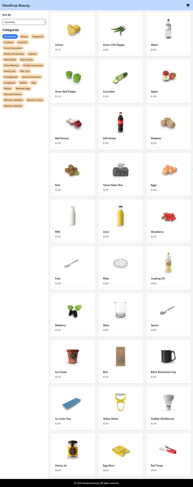

Experience: 17 months
Performance Optimization of 95%-100% using lighthouse reports for faster speed
Optimized Core Web Vitals(INP,LCP,CLS)
Optimized accessibility for screenreaders and other accomodations
Optimized Seo using the lighthouse reports

I am SeaAmber a front end web developer who builds responsive websites across different devices, optimizes the performance of the website. I also optimize websites for seo and accessibility through lighthouse reports.
I create websites from scratch as well as redesign into mobile responsive websites.
Email: Seaamber.9@gmail.com